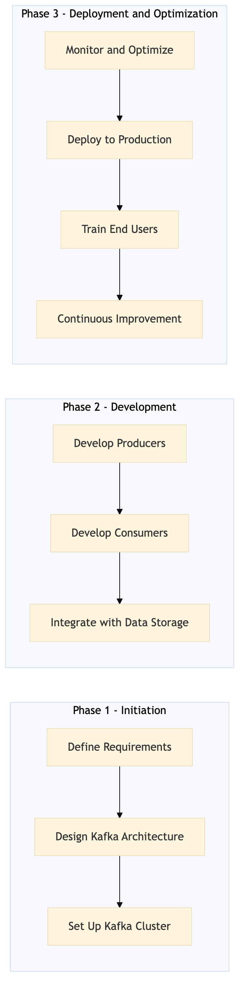

This process document outlines the implementation of real-time event streaming using Apache Kafka within the Expedia Group and Amex GBT / SAP Concur platforms.
| Trigger | Initiation of a new data integration requirement or identification of an existing system inefficiency that can be addressed through real-time event streaming. |
| Outcome | Successful deployment of Apache Kafka for real-time event streaming, enabling faster data processing, improved decision-making, and enhanced user experience across all integrated systems. |
| Systems | Expedia Open World Partner Central Amadeus NDC Sabre GDS Travelport EVC One Key TravelAds AWS SageMaker Snowflake Kafka Salesforce Tableau SAP Concur T2 SAP Concur Expense Amex GBT Neo/Complete Amadeus GDS SAP S/4HANA International SOS Cvent Amex Corporate Card VCN SAP Analytics Cloud Workday |

Click to enlarge
| Step | Name & Pain Point | Role | System | Input | Output | KPI | Flags |
|---|---|---|---|---|---|---|---|
| 1.1 | Define Requirements Misalignment between business needs and technical capabilities | Data Engineer | All Systems | Business requirements document | Detailed technical specification | Requirement clarity and alignment with business goals | ⚠ Exception |
| 1.2 | Design Kafka Architecture Designing a scalable yet efficient Kafka setup | Data Architect | Kafka, AWS SageMaker, Snowflake | Technical specification | Kafka architecture diagram | Scalability and fault tolerance of the Kafka cluster | ⚠ Exception |
| 1.3 | Set Up Kafka Cluster Ensuring high availability and low latency | DevOps Engineer | Kafka, AWS SageMaker, Snowflake | Kafka architecture diagram | Running Kafka cluster | Cluster availability and performance metrics | ⚠ Exception |
| 1.4 | Develop Producers Handling data transformation and serialization | Software Developer | Expedia Open World, Partner Central, Amadeus NDC, Sabre GDS, Travelport, EVC, One Key, TravelAds, AWS SageMaker, Snowflake, Kafka, Salesforce, Tableau | Kafka architecture diagram | Producer applications | Data ingestion rate and error rates | ⚠ Exception |
| 1.5 | Develop Consumers Real-time data processing challenges | Software Developer | SAP Concur T2, SAP Concur Expense, Amex GBT Neo/Complete, Amadeus GDS, SAP S/4HANA, International SOS, Cvent, Amex Corporate Card, VCN, SAP Analytics Cloud, Workday | Kafka architecture diagram | Consumer applications | Data processing speed and accuracy | ⚠ Exception |
| 1.6 | Integrate with Data Storage Optimizing data storage for real-time analytics | Data Engineer | Snowflake, AWS SageMaker | Consumer applications | Integrated data storage solutions | Data retrieval speed and query performance | ⚠ Exception |
| 1.7 | Monitor and Optimize Identifying bottlenecks in the streaming pipeline | DevOps Engineer, Data Engineer | Kafka, AWS SageMaker, Snowflake | Running Kafka cluster, integrated data storage solutions | Optimized system performance | System uptime, latency, and throughput | ◆ Decision⚠ Exception |
| 1.8 | Deploy to Production Smooth transition to production without downtime | DevOps Engineer, Data Engineer | All Systems | Optimized system performance | Real-time event streaming in production | User satisfaction and operational efficiency | ⚠ Exception |
| 1.9 | Train End Users Effective communication of new features to users | Business Analyst, Data Scientist | All Systems | Real-time event streaming in production | Trained end users | User adoption rate and feedback | ⚠ Exception |
| 1.10 | Continuous Improvement Balancing feature enhancements with system stability | Data Engineer, DevOps Engineer | All Systems | User feedback and system performance metrics | Improved real-time event streaming capabilities | System reliability and user satisfaction | ◆ Decision⚠ Exception |